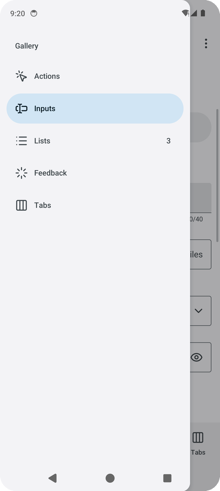
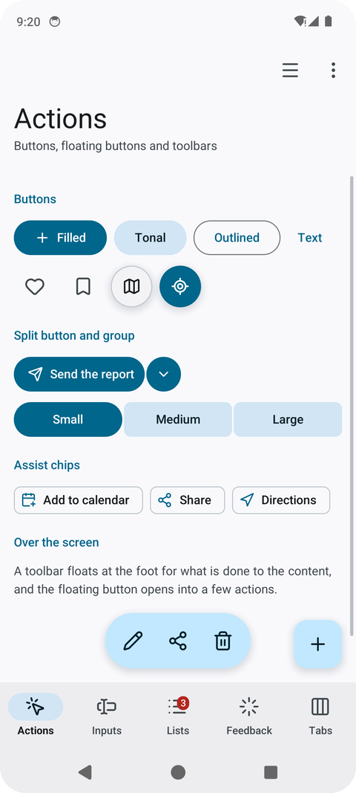
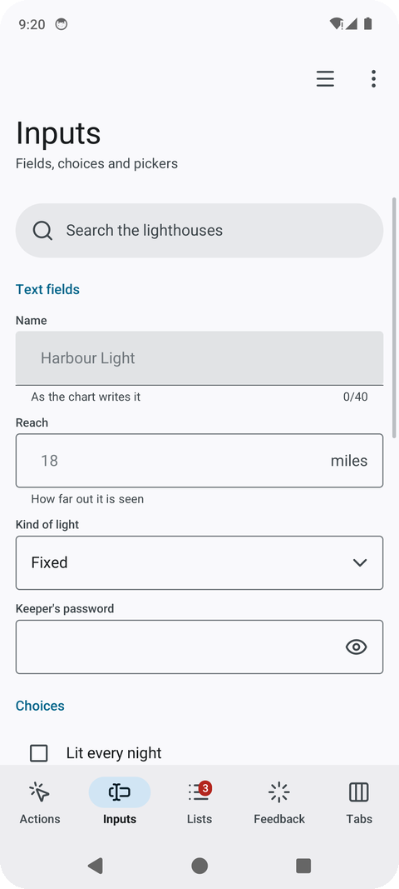
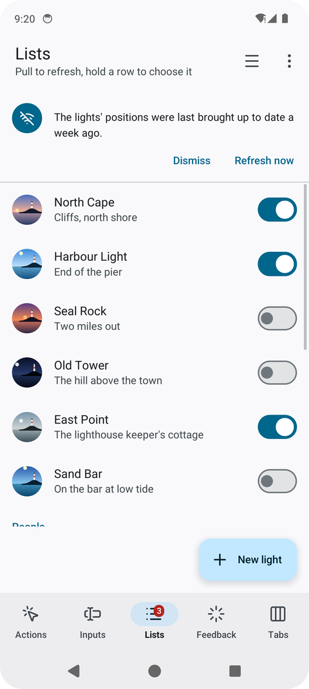
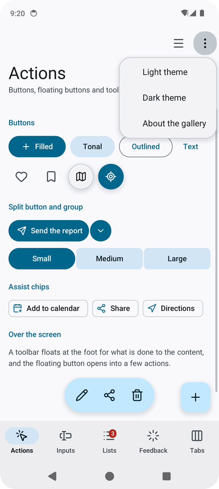
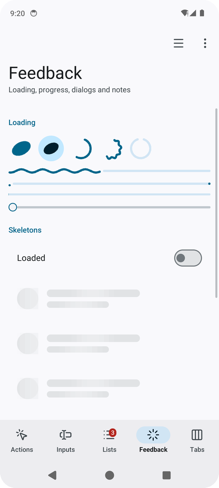
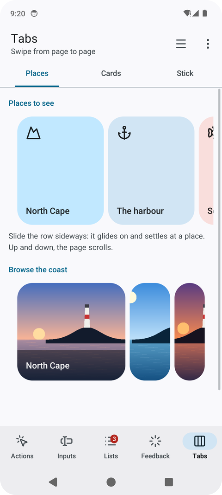

Every piece, by Material’s catalogue: navigation, actions, selection, inputs, containment,
overlays, pickers, progress and gestures. The package’s files follow the same order (doc.go lists them).
navigation.go

| Piece | What it is |
|---|---|
TopAppBar(TopBar{…}) |
The bar at the top, painted up under the status bar: a back arrow (a cross with Close, to leave a mode), a title and a subtitle, actions at its end; Large writes the title big under it, and with Scrolled (go-ui’s ScrollOffset of the page under it) it shrinks into a small bar as the page goes up |
NavigationBar(destinations, &selected) |
Three to five destinations at the bottom, painted down under the gesture bar; Destination.Badge marks one with a count or a dot |
NavigationRail(destinations, &selected) |
The same down the left edge, on a wide screen (Wide()) |
NavigationDrawer(name, title, destinations, &selected) |
Every destination in a drawer sliding in from the left |
Tabs(name, labels, &selected) |
Primary tabs, the underline sliding to the one chosen |
TabPager(name, labels, &pager, page) |
Tabs over pages a finger swipes from side to side, the underline following them |
Body(besideRail, content), Enter(key, content) |
A screen’s content kept clear of the cutout and the gesture bar; a screen rising into place |
Navigation, Screens(name, &navigation, screen), GoBack(&navigation) |
A stack of screens inside one place: Go(key) opens one sliding in from the right, GoBack from the system’s back slides it away; the place’s first screen is the key "" |
Back(), StatusBarScrim() |
The system’s back for the screen (see Back and motion); the strip under the status bar alone |
actions.go

| Piece | What it is |
|---|---|
FilledButton, TonalButton, OutlinedButton, TextButton |
Actions, from the most to the least important; an icon before the label when given |
IconButton(icon), RoundButton(icon, size, primary) |
A round 48-pixel target with an icon; a round button floating over a map or a scene |
FloatingButton(icon), ExtendedFloatingButton(icon, label) |
The floating action button, alone or with its action written |
FloatingMenu(name, &menu) |
The floating action button opening into a few actions stacked above it; menu.Label names it for a screen reader |
SplitButton(icon, label) |
A main action joined to a button opening its other choices; tells which half was touched |
ButtonGroup(name, labels, &selected) |
Expressive’s connected buttons: the chosen one fills and rounds out |
FloatingToolbar(name, tools, above) |
A pill of actions floating over the content at the bottom: an icon each, its label read by a screen reader |
selection.go and chips.go| Piece | What it is |
|---|---|
Switch(name, &on), Checkbox(label, &on), RadioButton(label, chosen) |
On or off; ticked or not; one of a few |
SegmentedButtons(name, options, &selected) |
Two to five choices sharing a row, one chosen |
Slider(name, &value, minimum, maximum, step) |
A value between two ends, dragged |
FilterChip(label, selected), AssistChip(icon, label), InputChip(label) |
A choice on or off in a row; an action suggested beside the content; something entered, with a cross to take it out |
Tag(text, ink, tint) |
A label in a pill of its own colours: a state, a count |
inputs.go

| Piece | What it is |
|---|---|
TextField(name, &text, Field{…}) |
Material’s text field, outlined or Filled: a label, the box with a Prefix and a Suffix, a hint or an error under it and a Counter; Secret with Reveal for a password and its eye. The on-screen keyboard comes up while it is typed in, suggests words and underlines the one it is composing; a finger held on a word selects it, with handles to drag and a bar to cut, copy and paste (Look.Words in the person’s language) |
Dropdown(name, label, choices, &dropdown) |
Material’s exposed dropdown: a box showing the choice, opening the choices under it |
SearchView(name, placeholder, &search, content) |
A search pill that opens over the whole screen, ready to type in, with what the program finds under it |
SearchBar(name, &text, placeholder) |
A pill to search in, with a button to empty it |
containment.go

| Piece | What it is |
|---|---|
ListItem(name, Item{…}) |
A list row: an icon in a round avatar (or a photo, Picture), a headline, a supporting line, something at its end; Selected tints it and puts a tick in the avatar’s place |
ExpandableItem(name, item, &open, more) |
A row that unfolds to show more under it and folds back, its chevron turning |
Card, ElevatedCard, OutlinedCard |
Containers for one subject: filled, raised over a scene, drawn by their border |
Avatar(name, icon, tint, size), PictureAvatar(picture, size) |
A person’s initials or a thing’s icon in a circle; a photo in one |
Banner(icon, text, actions…) |
A message across the top of the content that stays until acted on |
SectionTitle, Heading, Divider |
A small heading over a list’s rows; one for content with its own margins; a line between groups |
Text, Paragraph (look.go) |
One line; text that breaks into lines at the width it has |
overlays.go

| Piece | What it is |
|---|---|
Dialog(name, Dialog{…}) |
A question over the dimmed screen: an icon, a title, a text, more content, one or two actions. Returns Open, Confirmed or Dismissed |
BottomSheet(name, content) |
Choices or a short form in a sheet rising from the bottom |
StandardSheet(name, &sheet, peek, content) |
A sheet over the screen that does not dim it (a map’s places): it rests low or expanded, and a finger drags it by its handle |
SideSheet(name, title, content) |
Filters or details in a sheet sliding in from the end, with a title and a cross |
Snackbar(&snackbar) |
A short note at the bottom for a few seconds, with an action (snackbar.Show(text, action, duration)) |
Menu(icon, choices) |
A button that opens a list of choices; returns the one chosen |
pickers.go| Piece | What it is |
|---|---|
DatePicker(name, &picker, &date) |
A day chosen a month at a time, in a dialog; DateNames for another language |
TimePicker(name, &picker, &date) |
A time on Material’s dial: the hours 1 to 12 round it and 13 to 00 inside, then the minutes; touched or dragged round |
progress.go

| Piece | What it is |
|---|---|
LoadingIndicator(size), ContainedLoadingIndicator(size) |
Expressive’s indicator for a short wait: a filled shape turning and morphing from one form to the next, alone or on a round container |
CircularProgress(fraction, size, wavy) |
A ring filling as work gets done, or an arc chasing round (Indeterminate); wavy as Expressive draws it |
WavyProgress(fraction), LinearProgress(fraction) |
A line filling with a travelling wave, a track and a stop dot; the plain line |
VideoPlayer(name, video, height) |
A film (go-ui’s window.Video) in a rounded box, a round play button over it while paused, a line of how far it has played; touching it plays or pauses |
Skeleton(width, height, radius) |
A quiet block with a light crossing it, standing in for content still coming |
go-renderer draws rounded rectangles, shadows, text and icons; the indicators’ shapes are made of
rectangles in a box the program paints itself (go-ui’s Context.Paint): a shape is filled row by
row and edged with small dots, a wave or an arc is a line of dots. An indicator asks for frames
while it is on screen, and a screen without one sleeps: five of them at once take about a third of
a core on a OnePlus 7 Pro, and nothing once the screen is left.
gestures.go, and the stick — stick.go

| Piece | What it is |
|---|---|
LongPressed() |
Whether the piece drawn just before was held: the phone buzzes, and a list starts choosing rows |
PullToRefresh(name, refreshing, layout, rows) |
A list that refreshes when pulled down past its top and let go; the indicator stays while refreshing |
SwipeToDismiss(name, row) |
A row a finger slides away, a bin in the gap it leaves |
Carousel(name, &carousel, count, itemWidth, item), CarouselItem |
A row of tiles slid sideways, gliding on and settling at a tile |
CarouselPicture(picture, height, title) |
A carousel item made of a photo, its title on a dark veil at its foot |
MultiBrowseCarousel(name, &carousel, count, largeWidth, height, item) |
Material’s multi-browse carousel: large tiles, then a medium and a small one; tiles shrink towards the edges and grow as they come in |
Stick(name, &stick, size) |
An on-screen stick for walking or driving with a thumb |
Photos are go-renderer’s draw2d.Image: decode one once (draw2d.DecodeImage reads a PNG, JPEG
or GIF the program embeds) and keep it. context.Image(picture, layout, radius) draws it filling a
box, cropped evenly where their shapes differ; the pieces take one where a photo belongs:
Item.Picture in a list row’s avatar, PictureAvatar, CarouselPicture in a carousel. The
gallery paints its own pictures of a coast at different times of day, so it ships no photos.
//go:embed north-cape.jpg
var northCapeFile []byte
northCape, err := draw2d.DecodeImage(bytes.NewReader(northCapeFile))
…
look.ListItem("north", material.Item{Picture: northCape, Headline: "North Cape"})
window.OpenVideo(film) opens a film (the bytes of an MP4 or WebM, often embedded) and
look.VideoPlayer shows it: on Android the phone’s own decoders read it, in a browser the browser
does, without sound for now; on the desktop films do not play yet (window.ErrVideoUnsupported).
The gallery’s film, six seconds of a made-up coast at dusk, plays in a card on the tabs screen; on
a OnePlus 7 Pro it takes about two fifths of a core while it plays.
//go:embed harbour.mp4
var harbour []byte
video, err := window.OpenVideo(harbour)
video.Loop = true
…
look.VideoPlayer("harbour", video, 180)